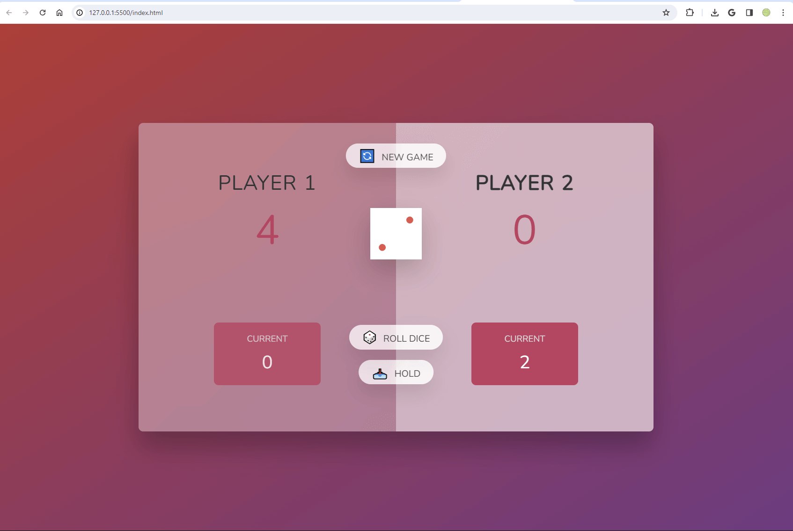

Created a classic snake game with C++ and conio.h library. The snake
can grow longer and longer as they eat more fruits on the map. The
player will use WASD keys to control the snake and lose if their snake
eats its tail or hit the edge of the map.
The previous version of the app had bugs is now fixed.
Check it out

Created a game that allows two players to take terms to roll a dice.
Getting dice one = lost all points at that round && switch player. 1st
get 100 = victory! Using javascript,CSS,HTML,and DOM manipulation.
Check it out
Lead a group of 5 to build a robot that can sweep, vacuum, and mop at
the same time, and can be controled by a IR remoter. DC motors,
ultrasonic sensors, IR sensors, 5V batteries and arduino were used in
this project.

A text adventure game with sound and scoreboard using Java Swing for
elementary students. Users need to choose correct answers based on the
questions before they lose all their HP. The game includes a cheerful
opening and different sound effects for choosing right and wrong
answers. The top 5 players’ scores will be saved and can be viewed on
the starting page.
Check it out